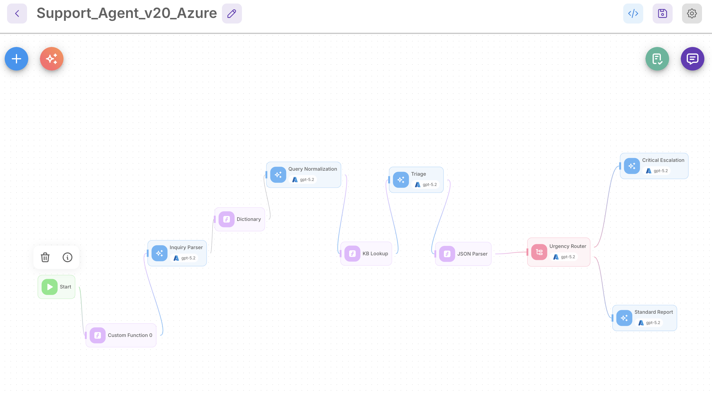

- 개요
-
- 고객 지원 요청 접수 시 AI가 선제적으로 고객지원 요청을 분석하여 과거 History 유사사례의 기술지원 및 트러블슈팅과 연관되어 1차 실마리와 방향성을 제시하고 문의의 긴급성·난이도·지원 방식을 판단하는 AI "Support Agent"
- 역할
-
- Flowise 기반 에이전트 빌더 파이프라인 설계 및 구축
- 벡터DB(Qdrant) 및 기존 지식베이스(Support AI) 연동을 통한 유사 사례 검색 로직 설계
- 성과
-
- 엔지니어의 유사 사례 검색 시간 획기적 단축 및 업무 생산성 향상
- AS-IS: 구글 드라이브·노션 등에 분산된 과거 장애 및 문의 이력(History)을 수동으로 검색하느라 초기 대응 지연 발생
- TO-BE: AI 에이전트를 통한 사내 지식 통합 검색 환경을 구축하여 엔지니어의 정보 탐색 시간을 크게 단축하고 신속한 고객 응대 파이프라인 마련
- 고객 문의를 4개 채널(음성/이메일/문자/이미지) 통합 처리 가능한 파이프라인 구조 확립
- 단순 문의는 빠르게 처리하여 엔지니어가 중요한 일에 집중할 수 있도록 돕고 시스템의 점진적 향상을 통해 업무 효율을 극대화함
- 개선점
-
- 문의 표현 방식 차이로 동일 의도에도 다른 과거 사례가 매칭되는 유사도 검색의 한계 확인, 검색 일관성 확보 필요.
- 검색 정확도의 단계적 향상을 위한 지식베이스 지속 최신화 필요.
- 프로젝트 아키텍처
-
SupportAgent 데모 영상 
- 테스트 및 기술정리